Our goal is to identify landslide sites using changes in ground-surface elevation resolved between sequential aerial lidar acquisitions. We could work with the lidar point clouds directly for this task, but we would like to take advantage of raster-processing algorithms for image segmentation and topographic analyses, so we want to evaluate the potential of working with the raster DTMs derived from the lidar point-cloud ground returns. Specifically, we here evaluate elevation-difference rasters, referred to as “DEMs of Difference (DoDs)” (R. D. Williams 2012). A DoD is obtained by subtracting one DTM1 from another.
In using two (or more) lidar data sets to detect elevation change, it is necessary to ensure that the data sets are spatially aligned (Cucchiaro et al. 2020). Differences in spatial registration will produce systematic errors in measured elevation differences. In the study design, we described approaches that have been used for co-registration of lidar datasets. These involve two strategies:
Co-register the lidar point-cloud ground returns, then build the two DTMs.
Build the two DTMs, then coregister one DTM to align with the other.
The first approach seems likely to be the more consistent of the two, because consistent methods can be used for filtering ground returns from both point clouds and for interpolation of the DTMs from the ground returns. When using existing DTMs, e.g., those downloaded from the Washington Lidar Portal, they may have been generated with different point-filtering algorithms and interpolation schemes. However, working with point clouds directly is computationally intensive and time consuming. If we can obtain good results with the existing DTMs, that will reduce time and computer requirements (Li et al. 2023).
Both approaches must address errors in the two lidar data sets. Besides the systematic errors associated with differences in the spatial registration of the point clouds and resulting DTMs, sources of error include uncertainty in the elevation and location of each laser-signal reflection represented by points in the point cloud, laser reflections from vegetation interpreted as ground returns, and uncertainty as to what the elevation is in between ground-return locations. These errors and uncertainties carry through to a DTM built by interpolating from the ground-return points to a DTM grid. The DoD obtained by subtracting one DTM from another will include the combined effects of the errors and uncertainties in both DTMs.
The magnitude of these errors and uncertainty affect the confidence we can place in inferences made using the DTMs and the resulting DoD. We need to account for this uncertainty when coregistering one DTM to the other and when mapping landslide scars and deposits using the DoD. A common way to account for this uncertainty is by determining a “minimum level of detection” (LoD) (e.g., Wheaton et al. 2010). The LoD is generally set so that we can assume a specified level of confidence that DoD values greater than the LoD represent actual changes in ground-surface elevation. Differences less than the LoD fall within the range of inherent noise in the DoD and may or may not represent true changes in ground elevation.
In the next sections we describe a method for estimating an LoD value and using it to guide co-registration of the two DTMs and identification of landslide scars and deposits.
Aligning one DTM to another
Consider two DTMs for the same site. One may be slightly shifted horizontally and vertically from the other, and/or slightly tilted or rotated. Over all or some portion of the DTMs, we can seek to shift and rotate one so as to minimize differences with the other (D. Rosenholm and Kennert Torlegard 1988). We assume that, over the spatial extents of aerial lidar acquisitions (as opposed to those of satellite-acquired lidar), registration of the point clouds and derived surface models is sufficiently accurate that differences in the tilt and rotation of the coordinate systems is minimal. We focus on a linear displacement of one DTM from the other by an amount \(\Delta x, \Delta y, \Delta z\). We express the elevation difference \(\Delta e_i\) between the two DTMs at a grid-point \(i\) as
\[
\Delta e_i = \frac{\partial{\Delta e_i}}{\partial{x_i}}\Delta x + \frac{\partial{\Delta e_i}}{\partial{y_i}}\Delta y + \frac{\partial{\Delta e_i}}{\partial{z_i}}\Delta z
\tag{1}\]
where \(\frac{\partial{\Delta e_i}}{\partial{x_i}}\) is the partial derivative of the elevation difference with respect to \(x_i\), and similarly for \(y_i\) and \(z_i\). For \(n\) DTM grid points, we then have \(n\) equations, each with a unique \(\Delta e_i, \frac{\partial{\Delta e_i}}{\partial{x_i}}\), and \(\frac{\partial{\Delta e_i}}{\partial{y_i}}\) (the value of \(\frac{\partial{\Delta e_i}}{\partial{z_i}}\) is simply 1) and with single values for each of \(\Delta x, \Delta y\), and \(\Delta z\). We seek the \(\Delta x, \Delta y\), and \(\Delta z\) values that provide the best estimates of all the \(\Delta e_i\). We can treat this as a linear least-squares problem. In matrix notation, we seek to minimize \(||\boldsymbol{A}\boldsymbol{x} - \boldsymbol{b}||^2\) where \(\boldsymbol{A}\) is a 3 by \(n\) matrix containing the partial derivatives, \(\boldsymbol{x}\) is a 3-element vector containing the the \(\Delta x, \Delta y\), and \(\Delta z\) values, and \(\boldsymbol{b}\) is an \(n\)-element array containing the \(\Delta e_i\).
The partial derivatives \(\frac{\partial{\Delta e_i}}{\partial{x_i}}\) and \(\frac{\partial{\Delta e_i}}{\partial{y_i}}\) reflect the ground-surface slope at point \(i\) as resolved by the DTM. Each point lies at the corner of four DTM cells, each cell is defined by four points, as illustrated in Figure 1 below. The black lines outline a set of four reference DTM cells. Elevations are specified at the corners, shown by the black circles. The red lines outline the corresponding four cells of the DTM we want to align with the reference DTM. We start with the grid points of the two DTMs aligned. At the center point (point 5 in Figure 1), we subtract the elevation of the reference DTM from the DTM to align. This is \(\Delta e\) for that point. We can estimate elevations and the derivatives \(\frac{\partial{\Delta e}}{\partial{x}}\) and \(\frac{\partial{\Delta e}}{\partial{y}}\) within each DTM cell using bilinear interpolation based on the elevations at the corner points. We are seeking to shift the red DTM by an amount \(\Delta x\) and \(\Delta y\) so that the elevation within the shifted DTM cell at the location of the black DTM center point (point 5) will equal, as closely as possible, to the elevation of that reference DTM point.
For example, if the ground-surface gradient at the center point were 80% on a north-east aspect, if one DTM were offset from the other by 0.5m to the northeast, the elevation difference \(\Delta e\) between the two DTMs at that point would be 0.4m and \(\frac{\partial{\Delta e}}{\partial{x}}\) and \(\frac{\partial{\Delta e}}{\partial{y}}\) will both be around 0.57m/m (\(0.8/\sqrt2\)). By shifting the red DTM to the north-east by 0.5m, as shown in Figure 1, the elevations of the two DTMs will better match at the reference DTM center point, with the elevation of the red DTM cell at that point calculated using bilinear interpolation with the red corner points of the lower-left cell (points 1, 2, 4, and 5). These calculations are repeated for every point across the over-lapping portions of the two DTMs. The calculated values will vary a bit from point to point; we seek the single set of values that minimizes elevation differences across all reference DTM grid points. Even with the horizontal shift, we may find that the two DTMs have a remaining systematic elevation difference. That is addressed with the \(\Delta z\) value.
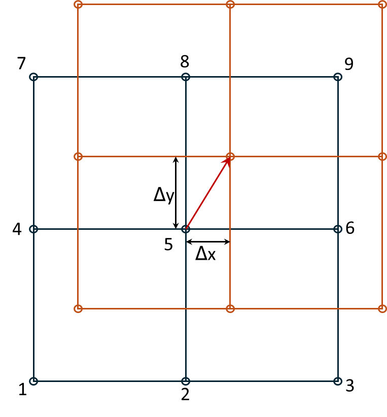
Figure 1: Shifting of the red DTM so that elevations at the black reference DTM center point (point 5) match as closely as possible.
Note
We found, however, that \(\Delta z\) was not constant with location, but varied nonlinearly with hillslope gradient \(\theta\) and varied with changes in forest-canopy height \(\Delta H\) (see Section 2.1 below). We therefore modified Equation 1 to: \[
\Delta e_i = \frac{\partial{\Delta e_i}}{\partial{x_i}}\Delta x + \frac{\partial{\Delta e_i}}{\partial{y_i}}\Delta y + ((\beta_0 + \beta_1\theta + \beta_2\theta^2) + (\beta_3 + \beta_4\theta)\Delta H))
\tag{2}\]
The \(\Delta x\) and \(\Delta y\) terms determine the horizontal shift needed to align the DTMs, the \((\beta_0 + \beta_1\theta + \beta_2\theta^2)\) term determines the hillslope-gradient-dependent vertical shift, and the \((\beta_3 + \beta_4\theta)\Delta H)\) term accounts for systematic errors associated with changes in canopy height from forest growth and timber harvest, and for variations in vegetation height in agricultural areas, between the time of the two lidar acquisitions.
For any overlapping portion of two DTMs, we can find an optimal set of values for \(\Delta x, \Delta y\), and the \(\beta\)s. In doing this, we want to exclude portions of the DTMs where elevation changes did occur. The \(\Delta e\) values for those sites would not be a consequence of a systematic shift in the registration between the DTMs and including those in our set of equations would bias the resulting estimates for \(\Delta x, \Delta y\), \(\Delta z\) and \(\beta\). Below we describe a method for differentiating systematic errors and noise from the elevation changes we want to resolve.
We’ll use a portion of the Post-Mortem study area with overlap of the 2006 and 2007 lidar DTMs that contains several of the study blocks. The study blocks are shown by the black polygons in the image below. The red box outlines the analysis area.
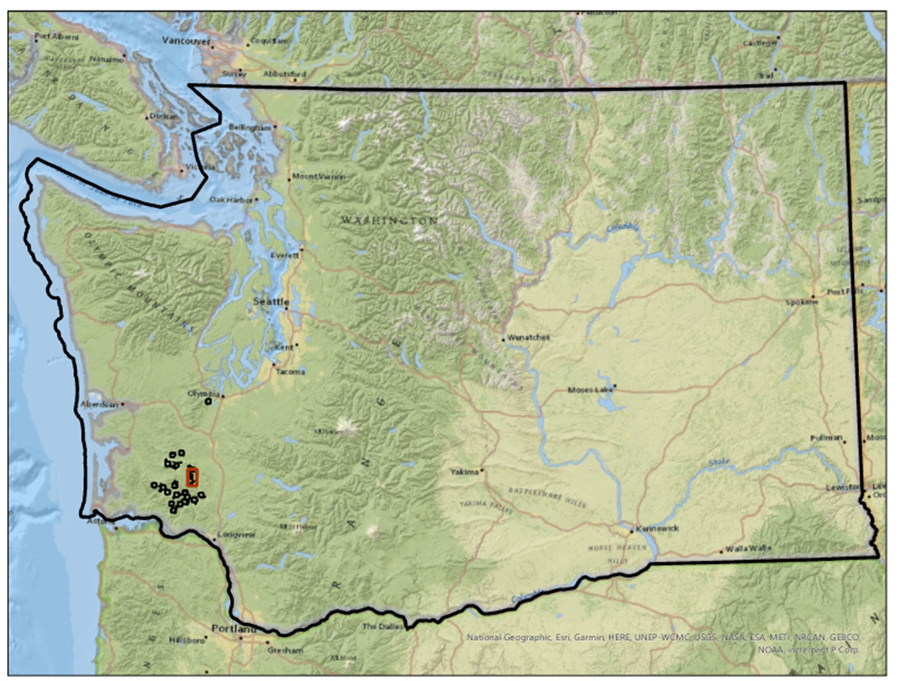
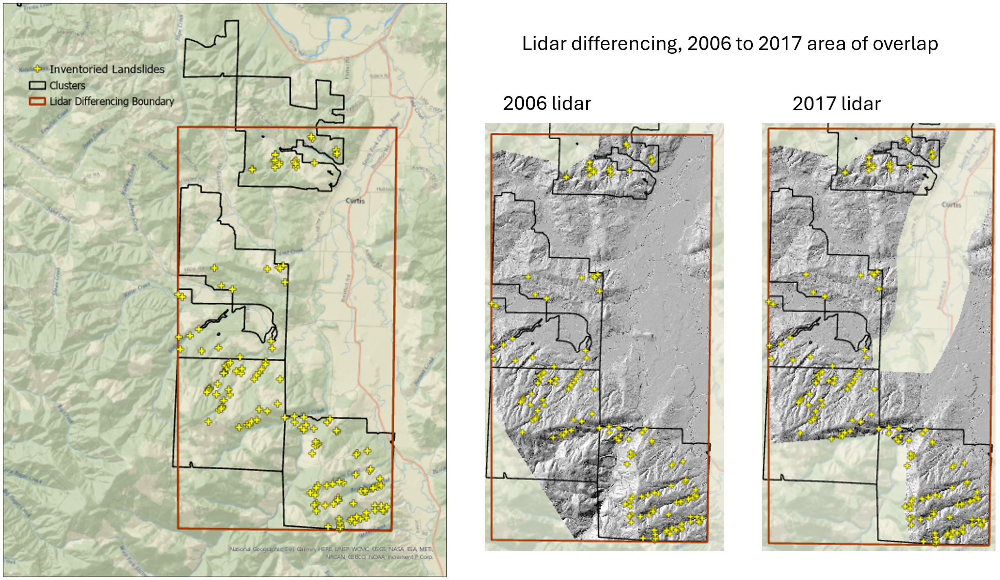
Figure 2: Site location and area of analysis.
Overlap of the two DTMs is shown below with the elevation difference, in quarter-meter increments, indicated by the colors.
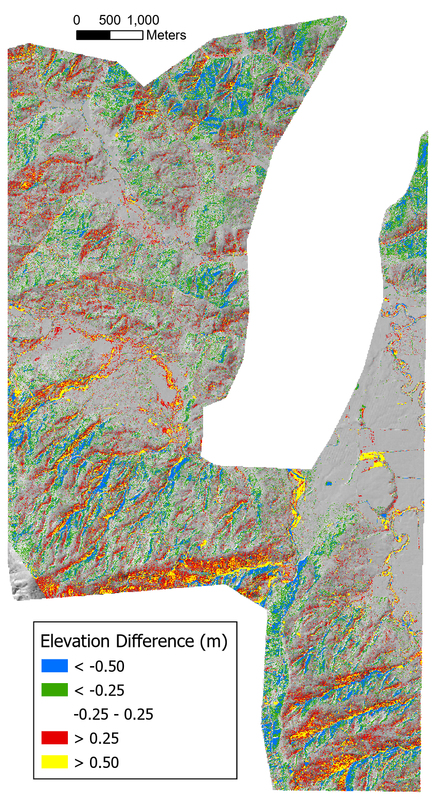
Elevation difference (m), 2006 to 2017 lidar overlap, draped on a shaded relief image
The elevation differences are spatially variable with systematic biases aligned with hillslope aspect. We can see this bias by binning the elevation differences for each DTM grid point by increments in slope and aspect and plotting quartiles. To make the following plots, we first determined the quartiles for the full range of elevation-difference values in each bin. We want to exclude sites where elevations did change, e.g., at landslide sites. That is, we need to determine the LoD (minimum level of detection) that differentiates between signal (actual elevation changes) and noise.
Error statistics compiled for each DTM can be used to estimate a theoretical LoD based on concepts of error propagation (Brasington, Langham, and Rumsby 2003; Lane, Westaway, and Murray Hicks 2003). These statistics are based on comparison of ground control points with lidar ground-return elevations. Using the standard deviation of elevation errors estimated for each DTM (\(\sigma_{2006}\) for the 2006 lidar and \(\sigma_{2017}\) for the 2007 lidar), the standard deviation of differences in elevations between the DTMs (\(\sigma_{\Delta z}\)) is estimated as
For the 2006 lidar, \(\sigma_{2006}\) is reported as 0.06m. For the 2017 lidar, \(\sigma_{2017}\) is reported as 0.04 m in unvegetated areas and 0.09m in vegetated areas. Using the vegetated value, this gives an estimated \(\sigma_{\Delta z}\) of about 0.10 m. Assuming that errors follow a normal distribution centered about zero, we might then assume with 95% confidence (two \(\sigma_{\Delta Z}\)) that differences greater than 0.2m indicate actual changes in elevation.
This approach does not, however, account for all sources of uncertainty in the DoD. In particular, lidar ground returns do not have a uniform spacing. In areas with forest canopy, there may be gaps that span multiple DTM grid points (discussed in Section 2.1 below). Elevations of the DTM points through these gaps are unknown and must be interpolated from the surrounding ground returns. These gaps may not align between the two DTMs. To account for this, and other, sources of uncertainty, we would prefer a method for estimating the LoD based on the DoD itself.
To do that, we used the observed frequency distribution of elevation-difference (\(\Delta e\)) values. We sorted all values from smallest to largest and found the \(\Delta e\) value for each quartile; \(q_1, q_2, q_3,\) and \(q_4\)2. The interquartile range (\(q_3-q_1)\) contains the middle half of all values and provides an indicator of the central tendency and variability of the distribution. We then used Tukey fences to identify likely outliers. Values less that \(q1 - k*(q3-q1)\) or greater than \(q3 + k*(q3-q1)\), with \(k=1.5\), are considered outliers. We have high confidence that these locations indicate sites where elevations have changed between lidar acquisitions. For each bin, we removed these potential outliers and recalculated the quartiles. We then used the resulting Tukey fences to define the upper and lower limit for an LoD.
# Run program Align. This code chunk calls an R wrapper for running the program.library(TerrainWorksUtils)library(stringr)inputPath <-"c:/work/data/postmortem/"outOutlier <-paste0(inputPath, "outlierN0")refDTM <-paste0(inputPath, "elev_2006N.flt") # reference DTM, pre landslidealignDTM <-paste0(inputPath, "elev_2017N.flt") # DTM to align, post landsliderefDSM <-paste0(inputPath, "dsm2006N.flt") # reference DSM, pre landslidealignDSM <-paste0(inputPath, "dsm2017N.flt") # DSM to be aligned, post landslideiterations <-4# number of times to repeat the alignment calculationk <-1.5# k <= 0, smaller values filter more points as outliersdampener <-1.0# proportion of calculated shift to apply with each iterationoutDTM <-paste0(inputPath, "elev_2017Naligned0") # output aligned DTMtileNx <-0# number of tiles in x (east-west) directiontileNy <-0# number of tiles in y (north-south) directionoverlap <-0.5# overlap between tilesradius <-15.# radius (m) for calculating slope and aspectnslope <-7# number of slope binsmaxSlope <-1.0# maximum slope gradient to include in binsnAzimuth <-8# number of aspect binsoutbins <-paste0(inputPath, "outbins0") # output csv file namesoutDif <-paste0(inputPath, "difN0") # output difference rasterscratch_dir <-"c:/work/scratch"executable_dir <-"c:/work/sandbox/gridutilities/projects/align/x64/release/"program_name ="align"if (!file.exists(paste0(outOutlier, ".flt"))) { returnCode <- TerrainWorksUtils::align(refDTM, alignDTM, refDSM, alignDSM, iterations, k, dampener, outDTM, tileNx, tileNy, overlap, radius, nslope, maxSlope, nAzimuth, outbins, outDif, outOutlier, scratch_dir, executable_dir, program_name)if (returnCode !=0) {stop("Error in Align") }}
Figure 3 shows median elevation-difference values (\(q_2\)) across the range of hillslope gradient and aspect increments. Deviations from zero indicate systematic variations with gradient and aspect.
Figure 3: Median difference (m) in 2006 and 2017 DTM elevations prior to coregistration, after removal of apparent outliers.
As shown in the upper panel of Figure 3, this systematic variation is small for low-gradient terrain and increases with slope steepness. For south-easterly aspects, the median elevation difference is negative; for north-westerly aspects, the median difference is positive, and for south-west and north-east facing slopes, the median difference remains small. This indicates that the DTMs are shifted in a south-east to north-west direction relative to each other.
We use the interquartile range as a measure of the magnitude of random variability in the difference raster.
Figure 4: Interquartile range (m) of 2006 and 2017 DTM elevation differencess prior to coregistration, after removal of apparent outliers.
In low-gradient terrain, the interquartile range is close to the standard deviation estimated with Equation 3 above. It then increases with slope steepness. This provides a characterization of the noise in the DoD obtained by subtracting the 2017 lidar DTM from the 2006 lidar DTM.
Can we define a function of slope and aspect that reflects the behavior observed in the graphs above? For a single aspect, we see that the median error exhibits a slightly curved dependence with gradient. The slope of that dependence varies with the sine of the aspect. This agrees with what we expect if the two DTMs are offset horizontally. Along the fall line, differences in elevation will be maximum; along a contour, differences will be minimum. We define
\[\mu = \sin(A+\alpha)\]
where \(A\) is the azimuth measured from north and \(\alpha\) is the angular shift such that variation in \(\mu\) aligns with that seen in Figure 3. We then define a quadratic function of gradient with coefficients that vary with \(\mu\):
where \(\theta\) is slope gradient and the \(\beta\) are empirical coefficients. This defines an equation with seven coefficients, \(\alpha\) and the six \(\beta\) values. We use the same equation for \(q_3\) and solve again for the seven coefficients.
We solve for these coefficients as follows:
Create a normalized set of curves for the variation of \(q_1\) and \(q_3\) as a function of aspect for each of the slope-gradient increments. The “normalized” curves vary from -1 to +1 over the range of aspects. The normalization is done as follows:
For each slope increment, find the maximum and minimum values of \(q1\) and \(q_3\).
Find the value of \(\alpha\) that minimizes the sum of squared residuals, i.e., find the value of \(\alpha\) that minimizes \(\sum_{i=1}^n(\sin(A_i+\alpha)-normq_i)^2\). This is done using Brent’s algorithm (see people.match.sc.edu/Burkardt/f_src/brent/brent.f90).
Define a set of linear equations \[qmin_i = \beta min_0 + \beta min_1*mu_i + \beta min_2*S_i + \beta min_3*mu_i*S_i\]\[qmax_i = \beta max_0 + \beta max_1*mu_i + \beta max_2*S_i + \beta max_3*mu_i*S_i\] where \(\mu_i = \sin(A_i+\alpha)\) and \(A_i\) is the slope aspect and \(S_i\) is slope gradient.
Solve for the \(\beta min\) and \(\beta max\) values. This is done using the LAPACK routine DGELS.
Here are the resulting curves for the eight major slope aspects (N, NE, E, SE, S, SW, W, and NW). In Figure 5, the circles show the binned \(q_1\) and \(q_3\) values, the thin black lines show the fits to the \(q_1\) and \(q_3\) values, and the heavy black lines show the LoD limits estimated using Tukey’s fences with \(k=1.5\).
Figure 5: Hillslope gradient- and aspect-dependent level of detection (LoD). The dots indicate calculated first and third quartiles for each slope and aspect interval, the thin lines show the polynomial fit to those points, and the thick lines show the Tukey’s fences using a k value of 1.5.
The envelope contained within the thick black threshold curves defines the elevation-difference values falling within the range of gradient- and aspect-dependent systematic errors plus random variability present in the DoD. We use these thresholds to define the LoD to identify sites where there likely were elevation changes during the time between the lidar acquisitions and exclude these from the set of equations used to estimate the optimal \(\Delta x, \Delta y\), \(\Delta z\), and \(\beta\) values with Equation 2 above.
Note that these thresholds are not symmetric about zero. The median (\(q_2\)), midway between the \(q_1\) and \(q_3\) curves, is near zero for low-gradient terrain, but veers away from zero at steeper gradients by an amount that varies with aspect. Shifting the 2017 DTM to minimize differences between the two DTMs should eliminate that aspect dependence.
Figure 7: Interquartile range (m) of 2006 and 2017 DTM elevation differences after coregistration.
Comparing before and after:
Code
pq2_slope <- pq2_slope +labs(title="Before")pq2f_slope <- pq2f_slope +labs(title="After")compareq2 <- pq2_slope / pq2f_slopecompareq2 <- compareq2 +plot_annotation(title="Median difference (m) before and after coregistration")compareq2
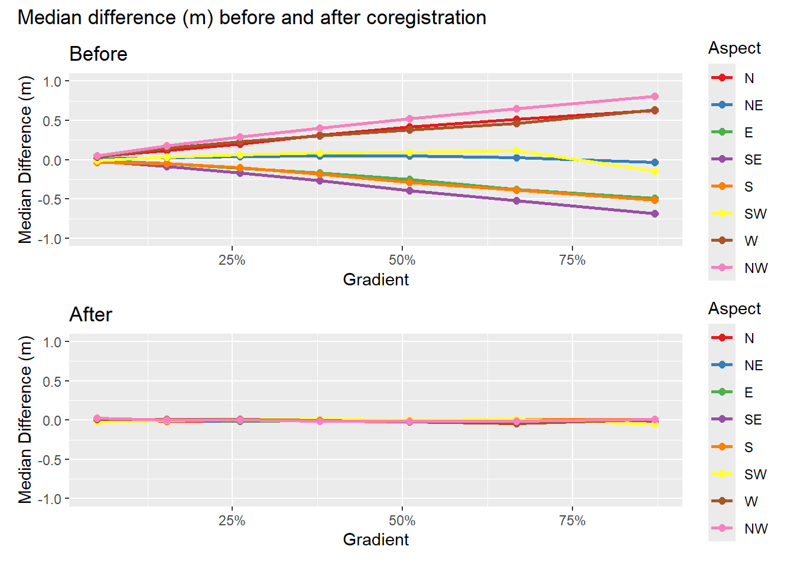
Figure 8: Median elevation differences (m) before and after coregistration.
Code
inter_slope <- pinter_slope +labs(title="Before")interf_slope <- pinterf_slope +labs(title="After")compareInter <- pinter_slope / pinterf_slopecompareInter <- compareInter +plot_annotation(title="Interquartile range (m) before and after coregistration")compareInter
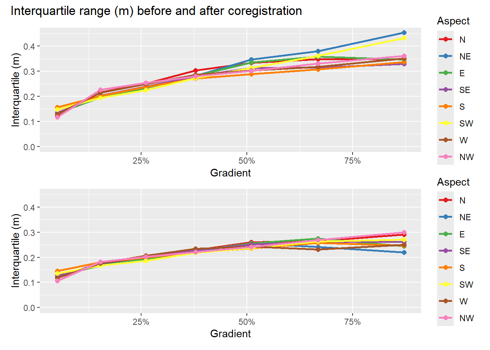
Figure 9: Interquartile range (m) before and after coregistration.
Here’s another look at the before and after results.
Figure 10: Density plots of median, mean, and interquartile range of elevation differences before and after coregistration.
We’ve narrowed the range of median and mean values and shifted the interquartiles to lower values. Here’s the elevation differences after alignment:
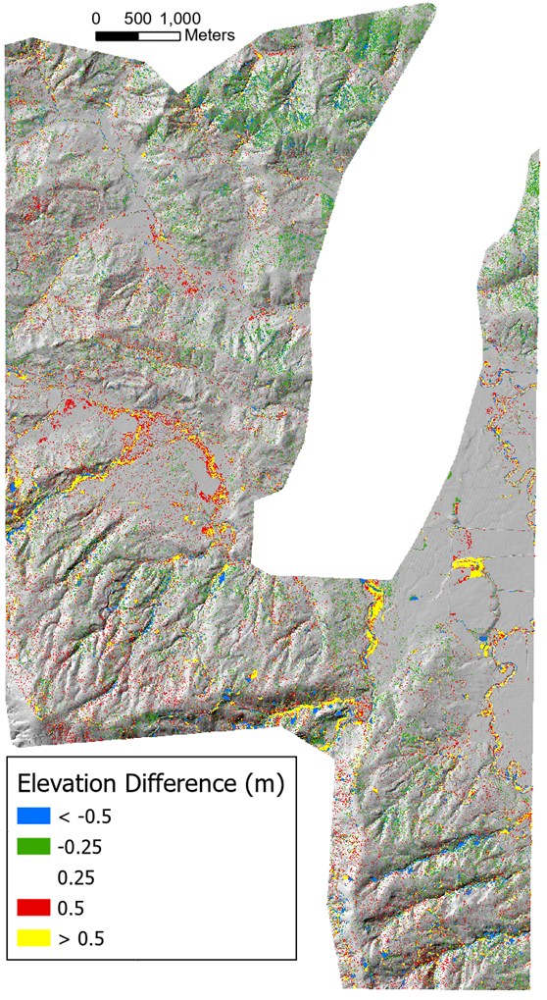
Figure 11
We still see random noise, but the systematic errors aligned with slope aspect are gone. Distinct changes are visible along many stream channels. The curves in Figure 12 below show the interquarile range and Tukey’s fences after coregistration. Note the change in y-axis scale relative to Figure 5.
Figure 12: First and third quartiles (dots), polynomial fits (thin lines), and limits using Tukey’s fences (k=1.5) after shifting the 2017 DTM.
The curves are now all symmetric about zero and the envelope defining the LoD is narrower. Even so, what we are interpreting as “noise” in the DoD still spans a range of about ± 0.5m. What might be some causes of this uncertainty?
Canopy effects.
See Figure 13 below. The left panel shows elevation differences draped on a shaded relief image for a portion of the overlapping 2006 and 2017 DTMs after coregistration; the right panel shows an aerial photo view of the same area. Over the low-gradient, low-relief, and unforested fields and pastures, differences between the two DTMs are minor. Over the forested hillslopes, the speckled pattern in the left panel indicates variability in DTM elevations on the order of several tens of centimeters over horizontal length scales of a few to ten meters, consistent with a general reduction of lidar DTM accuracy observed over forested areas (Simpson, Smith, and Wooster 2017).
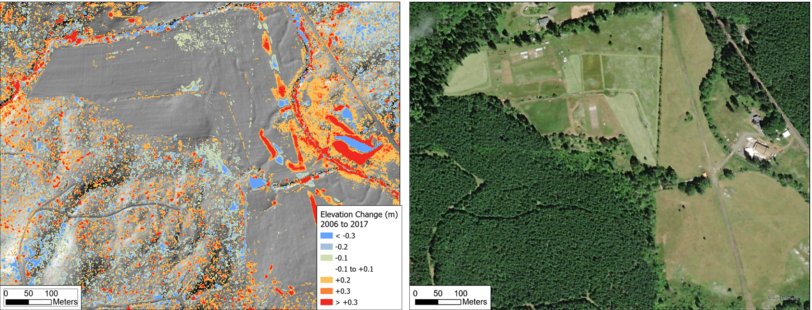
Figure 13: The left panel shows differences in DTM elevations after coregistration. The right panel shows an aerial photo view of the same area.
There are two likely primary reasons for the increased variability over forested areas (Petras et al. 2023):
Increased spacing of lidar ground returns because of reflections from the forest canopy, and
Interpretation of canopy reflections as ground returns.
Figure 14: The left panel shows the number of lidar ground returns within each cell of the 2006 DTM (3-foot DTM point spacing). The right panel zooms into the area within the box of the left panel. Black dots indicate ground returns.
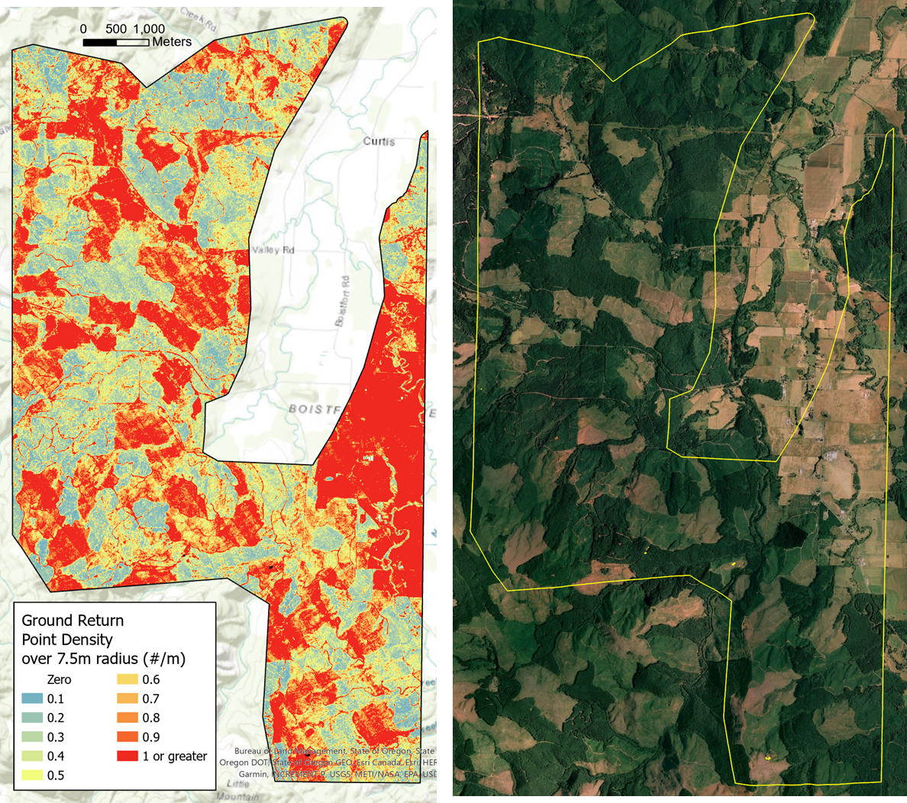
Figure 15: The left panel shows the ground-return point density for the 2006 lidar measured over a 7.5-m radius. The right panel shows an areal view of the area in the summer of 2006. Low point densities (blues) align with unforested fields and clearcuts.
Variation in ground-return spacing results in variable-sized gaps with no returns and variable spatial density in the number of signals per DTM cell. The bar chart in Figure 16 below shows the proportion of all cells in the 2006 DTM that overlapped the 2017 DTM containing a given number of ground returns.
Code
library(data.table)library(ggplot2)dataFile <-"c:/work/data/postmortem/pointcount.csv"cnt <-as.data.table(read.csv(dataFile))cnt[, prop := Cells/sum(Cells)]p_histo <-ggplot(cnt, aes(x=Points, y= prop)) +geom_col() +labs(title="Proportion of 2006 DTM cells with a given number of ground returns",x="Number of ground returns", y="Proportion of cells") +coord_cartesian(x=c(0,5)) +scale_y_continuous(labels = scales::percent)p_histo
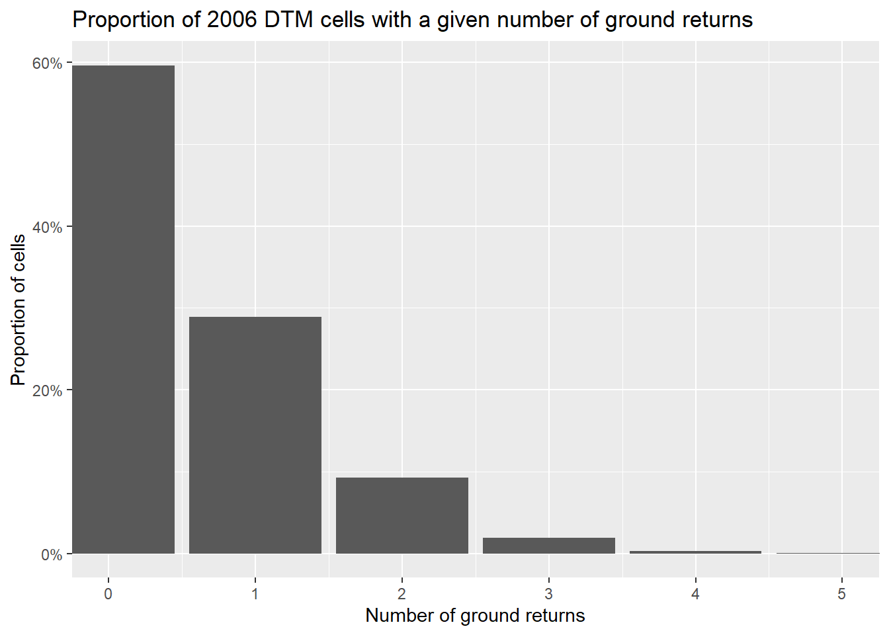
Figure 16: Proportion of 2006 DTM cells with a given number of ground returns
The variable spacing between ground returns results in variable lengths over which elevations are interpolated to the DTM grid points. Topographic detail between ground-return points is lost. The gaps in ground return points will differ between the two DTMs. In rough terrain, small features resolved in one DTM might thus be missed in the other, resulting in differences in the interpolated ground elevations.
A variety of factors can result in variable lidar point spacing (Yan 2023; Petras et al. 2023). For example, the systematic north-west to south-east trending variations in point density visible in the left panel may result from differences in the extent of swath overlap between adjacent flight lines as the lidar was collected. Random variations in point density in forested areas may result from spatial variability in the proportion of laser signals that penetrate through the tree canopy. Additionally, some of the ground returns may actually be misinterpreted reflections from tree canopy or understory vegetation, which introduces random errors into the DTM elevations.
After coregistration of the 2006 and 2017 DTMs, we found that variability in elevation differences, as measured by the interquartile range (Figure 9) ranged from about 10 to 30 centimeters, increasing with increasing hillslope gradient. Figure 17 below shows the same data, but here parsed by hillslope gradient and tree-canopy height. Canopy height was determined in program Align after shifting the 2017 DSM4 by subtracting the DTM elevation from the DSM elevation at each grid point and using the maximum of the 2006 or 2017 canopy heights.
Figure 17: Variation of the interquartile range with changes in canopy height and hillslope gradient.
The upper panel in Figure 17 shows the increase in interquartile range with hillslope gradient; the lower panel shows a slight increase in interquartile range with canopy height. To characterize the combined hillslope-gradient and canopy-height dependence, we fit the \(q_1\) and \(q_3\) values over all gradient-canopy height bins with an equation quadratic in both canopy height H and hillslope gradient \(\theta\):
\[
q = (\beta_0 + \beta_1 \theta + \beta_2 \theta^2) + (\beta_3 + \beta_4 H + \beta_5 H^2) + \beta_6 H \theta + \beta_7H^2\theta + \beta_8H\theta^2 + \beta_9H^2\theta^2
\tag{4}\]Figure 18 below shows the interquartile range and Tukey fences as functions of canopy height for a range of gradient interval. The black circles show \(q_1\) and \(q_3\) from the binned \(\Delta e\) values, the thin black lines show the curves fit to the \(q_1\) and \(q_3\) values using Equation 4, and the thick black lines show the Tukey fences with \(k=1.5\).
Figure 18: The interquartile range and LoD (Tukey’s fences with k=1.5) plotted as a function of canopy height for different increments in hillslope gradient.
Figure 19 below shows the same data, but plotted as a function of hillslope gradient.
Figure 19: The interquartile range and LoD (Tukey’s fences with k=1.5) plotted as a function of hillslope gradient for different increments in canopy height.
Variability in the range of elevation differences varies with both hillslope gradient and forest-canopy height. These curves account for both effects.
We are using the LoD defined by these graphs to identify “stable” locations where elevations have probably not changed between the 2006 and 2017 lidar acquisitions. We used the elevation differences over these stable locations to solve for the horizontal (\(\Delta x, \Delta y\)) and vertical (\(\Delta z\)) shifts needed to bring the 2017 DTM into alignment with the 2006 DTM, using Equation 2. The range spanned by this LoD, ± 0.5m, is sufficient, however, to include things like flood plain or fan aggradation.
There may stil be systematic biases in the random errors associated with lidar signal reflections from vegetation interpreted as ground returns. A plantation that grows 2 meters over that 11 years may generate larger mean positive errors in 2017 DTM elevations than in 2006 DTM elevations, resulting in a positive bias in elevation differences measured over that area. Likewise, an area harvested between 2006 and 2017 will generate a negative bias. Figure 20 below shows quartiles of \(\Delta e\) measured over 5-meter increments of canopy-height change between 2006 and 2007. Negative \(\Delta H\) values indicate a loss of canopy (timber harvest) or vegetation (mowing of a pasture). Positive values indicate canopy or vegetation growth.
Code
data <-as.data.table(read.csv(paste0(outbins, "_dzbyDelH.csv")))data[, "qmin":= Q1 -1.5*(Q3-Q1)]data[, "qmax":= Q3 +1.5*(Q3-Q1)]data_wide <-melt(data, id.vars ="DelH", measure.vars =c("qmin", "Q1", "Q2", "Q3", "qmax"))p_delH <-ggplot() +geom_point(data=data_wide[variable=="Q1"| variable=="Q2"| variable=="Q3",],aes(x=DelH, y = value, color=variable), size=3) +geom_smooth(data=data_wide[variable=="Q1",], aes(x=DelH, y=value, color=variable), method="lm", se=FALSE, linewidth=1.2) +geom_smooth(data=data_wide[variable=="Q2",], aes(x=DelH, y=value, color=variable), method="lm", se=FALSE, linewidth=1.2) +geom_smooth(data=data_wide[variable=="Q3",], aes(x=DelH, y=value, color=variable), method="lm",se=FALSE, linewidth=1.2) +coord_cartesian(x=c(-30,20)) +labs(title="Quartiles of Δe for 5-m increments in ΔH",x ="ΔH (change in canopy height in meters)",y ="Δe in meters") +theme(legend.title =element_blank())p_delH
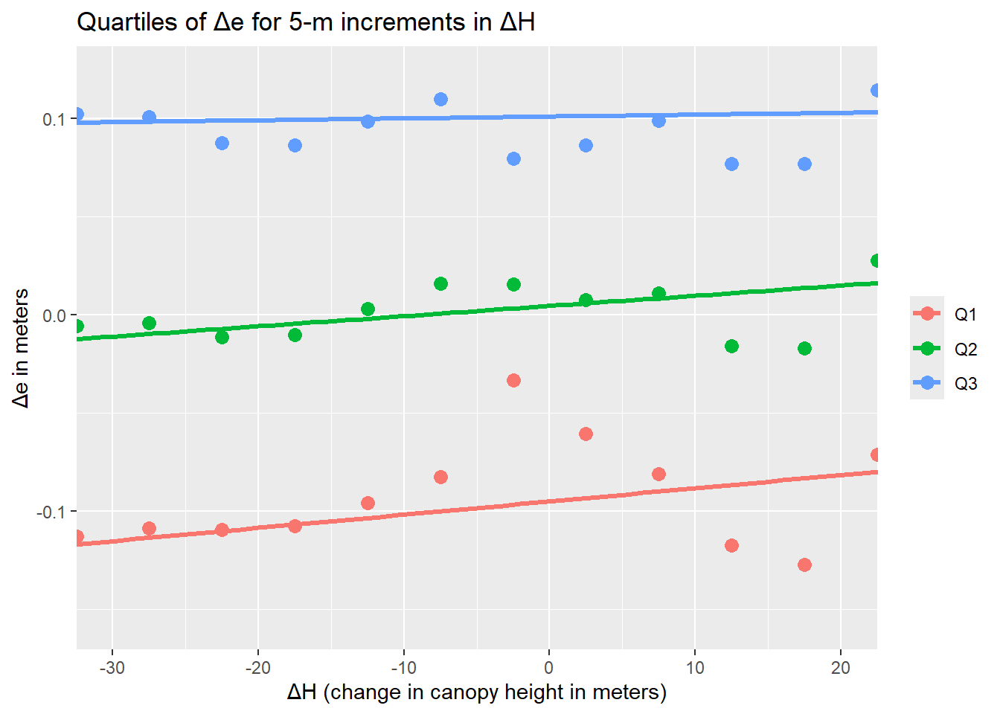
Figure 20: First, second, and third quartiles of Δe for increments of change in canopy height (ΔH) between 2006 and 2007.
We see a slight trend for increasing \(\Delta e\) values moving from negative to positive \(\Delta H\) values. This is consistent with the expectation that a loss of canopy (negative \(\Delta H\)) will generate a negative bias and that canopy growth will generate a positive bias. The deviation is small, on the order of 5 cm. However, this observation prompted inclusion of the \(\Delta H\) term in Equation 2.
Next: identify landslide scars using the DoD.
References
Brasington, James, Joe Langham, and Barbara Rumsby. 2003. “Methodological Sensitivity of Morphometric Estimates of Coarse Fluvial Sediment Transport.”Geomorphology 53 (3-4): 299–316. https://doi.org/10.1016/S0169-555X(02)00320-3.
Cucchiaro, Sara, Eleonora Maset, Marco Cavalli, Stefano Crema, Lorenzo Marchi, Alberto Beinat, and Federico Cazorzi. 2020. “How Does Co-Registration Affect Geomorphic Change Estimates in Multi-Temporal Surveys?”GIScience & Remote Sensing 57 (5): 611–32. https://doi.org/10.1080/15481603.2020.1763048.
D. Rosenholm, and Kennert Torlegard. 1988. “Three Dimensional Absolute Orientation of Stereo Models Using Digital Elvation Models.”Photogrammetric Engineering and Remote Sensing 54 (10): 1385–89.
Lane, Stuart N., Richard M. Westaway, and D. Murray Hicks. 2003. “Estimation of Erosion and Deposition Volumes in a Large, Gravel-Bed, Braided River Using Synoptic Remote Sensing.”Earth Surface Processes and Landforms: The Journal of the British Geomorphological Research Group 28 (3): 249–71.
Li, Tao, Yuanlin Hu, Bin Liu, Liming Jiang, Hansheng Wang, and Xiang Shen. 2023. “Co-Registration and Residual Correction of Digital Elevation Models: A Comparative Study.”The Cryosphere 17 (12): 5299–5316. https://doi.org/10.5194/tc-17-5299-2023.
Petras, V., A. Petrasova, J. B. McCarter, H. Mitasova, and R. K. Meentemeyer. 2023. “Point Density Variations in Airborne Lidar Point Clouds.”Sensors (Basel) 23 (3). https://doi.org/10.3390/s23031593.
R. D. Williams. 2012. “DEMs of Difference.” In. British Society for Geomorphology.
Simpson, Jake, Thomas Smith, and Martin Wooster. 2017. “Assessment of Errors Caused by Forest Vegetation Structure in Airborne LiDAR-Derived DTMs.”Remote Sensing 9 (11): 1101. https://doi.org/10.3390/rs9111101.
Wheaton, Joseph M., James Brasington, Stephen E. Darby, and David A. Sear. 2010. “Accounting for Uncertainty in DEMs from Repeat Topographic Surveys: Improved Sediment Budgets.”Earth Surface Processes and Landforms 35: 136–56. https://doi.org/10.1002/esp.1886.
Yan, Wai Yeung. 2023. “Airborne Lidar Data Artifacts: What We Know Thus Far.”IEEE Geoscience and Remote Sensing Magazine 11 (3): 21–45. https://doi.org/10.1109/MGRS.2023.3285261.
Footnotes
The terms “DEM”, for Digital Elevation Model, and “DTM”, for Digital Terrain Model, are not used consistently in the literature (e.g., see Wikipedia). We are using the term “DTM” because that is the term used on the Washington Lidar Portal. These DTMs are intended to represent the ground surface with all overlying vegetation and buildings removed.↩︎
One quarter of all \(\Delta e\) values are less or equal to \(q_1\), half are less than or equal to \(q_2\) (which is also the median value), three quarters are less than or equal to \(q_3\), and \(q_4\) is the maximum value.↩︎
Program Align is included in the Netstream suite of Fortran programs.↩︎
A DSM is a Digital Surface Model. It indicates the elevation of the 1st laser-signal returns. By subtracting the DTM from the DSM, we obtain a measure of the forest-canopy height. The DSMs were generated from the same lidar point clouds as used for the DTMs and were downloaded from the Washington Lidar Portal.↩︎